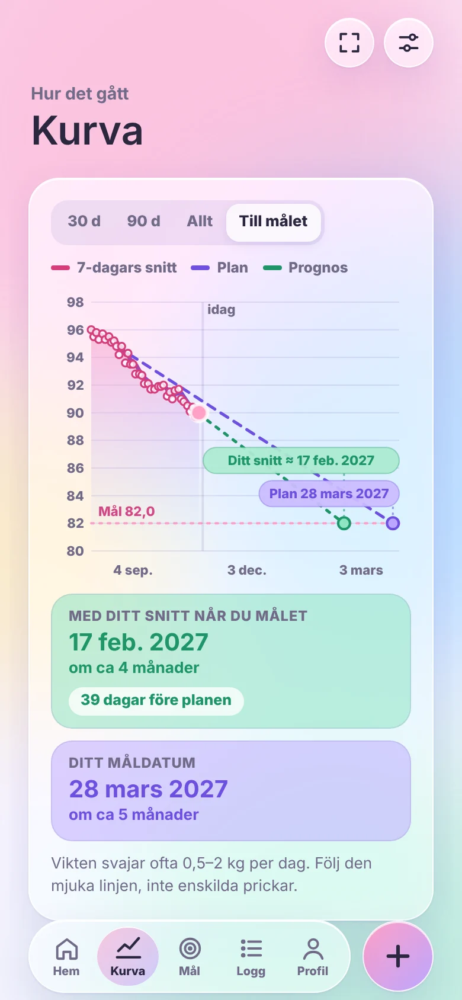
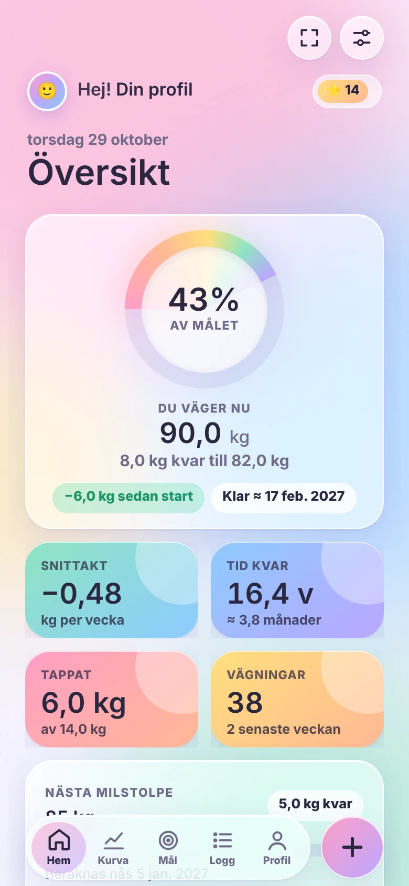
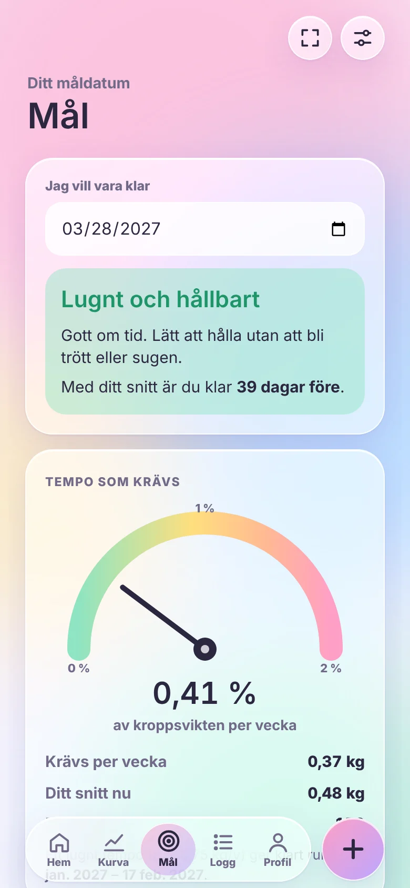
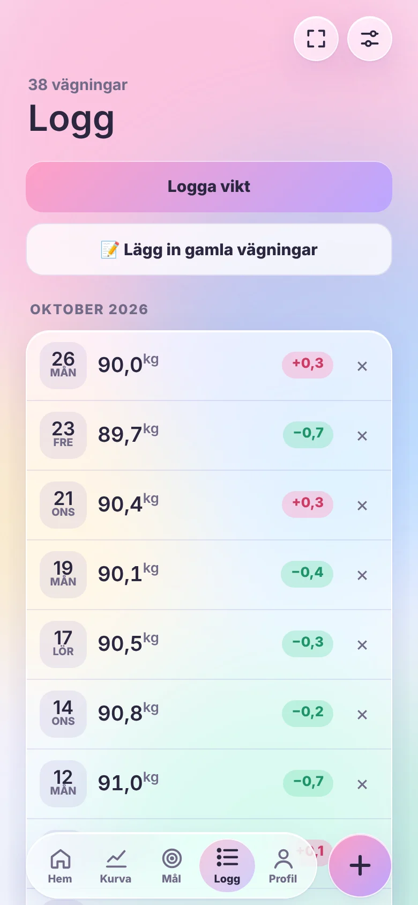
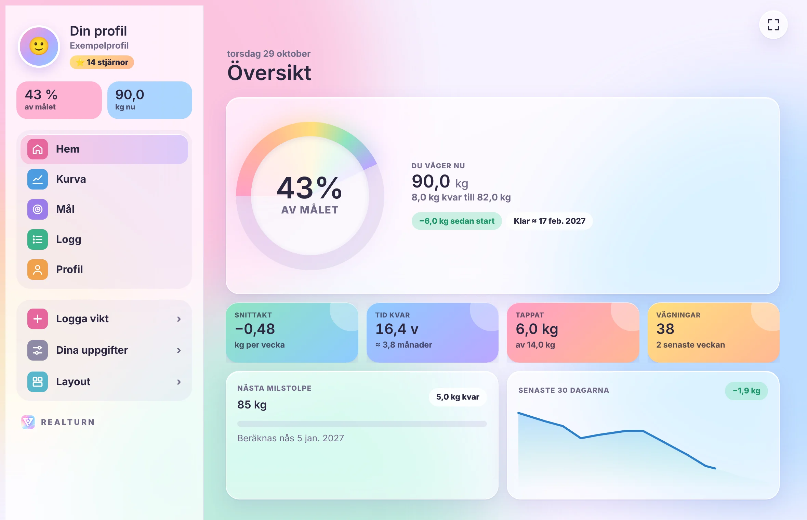
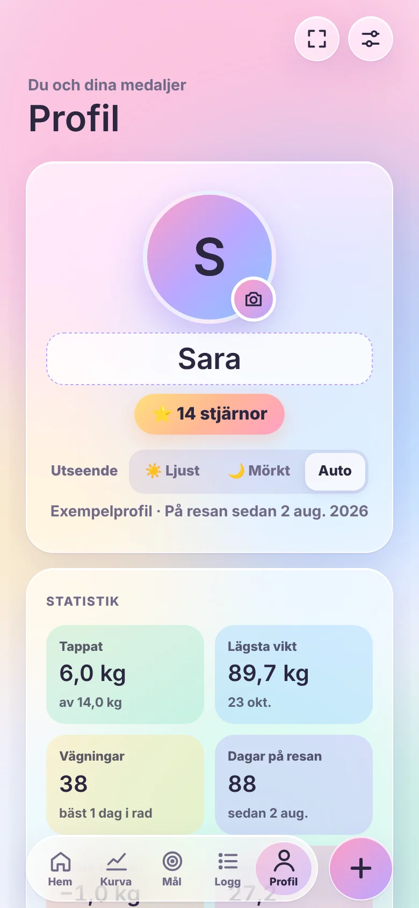
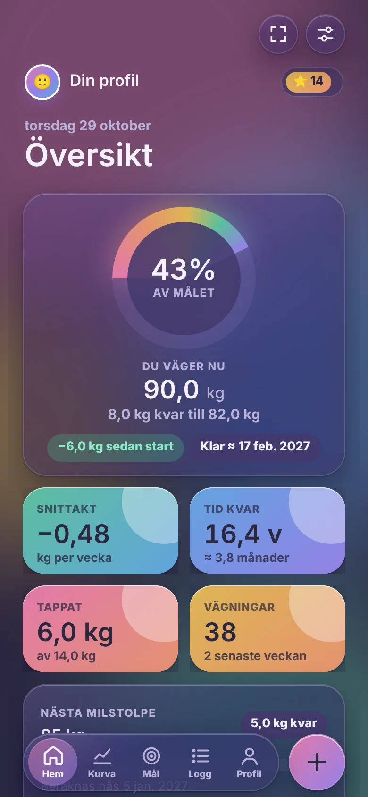

REALTURN räknar ut ditt verkliga snitt, visar vilket datum du når målet och säger ärligt om planen håller. Glad, pastellig och gjord för att du ska vilja öppna den varje morgon.


Vikten kan hoppa ett par kilo från en dag till nästa. REALTURN tittar på den mjuka linjen, så du ser hur det faktiskt går och slipper bli nedslagen av en enskild morgon.
En stor ring visar hur långt du kommit. Runt den ligger snittakt, tid kvar, tappade kilo och nästa milstolpe.
Kurvan visar hela resan, din plan och vart snittet leder. Vid målet står datumet, och under grafen ser du direkt om du ligger före eller efter planen.
Välj när du vill vara klar. REALTURN räknar ut vilket tempo det kräver och säger ärligt om det är lugnt och hållbart, i tuffaste laget eller för snabbt.

Kopiera hela anteckningen och klistra in. REALTURN läser datum och vikt i nästan vilken form som helst, visar allt innan det sparas och kan flytta din start bakåt.
Eller logga en i taget, på vilket datum som helst bakåt i tiden.

Hopfälld är REALTURN en vanlig iPhone-app med flikar i botten. Fäll upp, så tar översikten hela den stora skärmen. Liggande får du en fast sidomeny till vänster, precis som i Inställningar.

Flikrad i Liquid Glass som krymper när du scrollar.
Menyn som en glaspelare till höger, innehållet får hela ytan.
Fast sidomeny med profil och snabb överblick, tätare innehåll.
Ringen, snittakten, tid kvar och nästa milstolpe. Flytta och ändra storlek på korten som du vill.
Första kilot, två veckor nedåt, tio vägningar, en fjärdedel av vägen. Medaljerna dyker upp med datum och klockslag och samlas på din vägg tillsammans med stjärnor.
Några medaljer syns inte på väggen förrän du tagit dem.

Helt frivilligt via Game Center. Bjud in med en länk i Meddelanden och tävla på topplistor, utan att någon någonsin ser vad du väger.
Procent av målet
Antal medaljer
Dagar i rad
Veckans tempo i procent
Vikt och kilo
Längd
BMI
Dina vägningar
Game Center startar först när du själv trycker Börja tävla. Annars är allt privat.
På kvällen byter REALTURN till djupa pastellfärger och mörka glasmenyer. Välj Ljust, Mörkt eller låt telefonen bestämma.

Nej. Allt sparas på din telefon. Inget skickas någonstans om du inte själv slår på tävlandet med vänner.
Appen tar ditt 7-dagars snitt och den senaste trenden och förlänger linjen till målvikten. Datumet uppdateras varje gång du loggar en ny vägning.
Ja. Välj ett gammalt datum när du loggar, eller klistra in hela listan från Anteckningar på en gång under Logg.
Ja, fullt ut. Layouten anpassar sig både hopfälld och utfälld, stående och liggande.
Ja. Välj Utforska appen med exempeldata i välkomstguiden och klicka runt fritt. Tryck Kom igång när du vill börja på riktigt.
[PRIS]